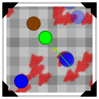
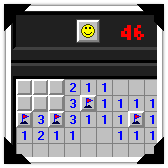
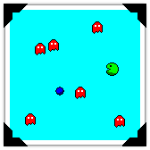

I make video games, mainly; here are a few I've released:
Hangman!Made in 72 hours for an internal hackathon at BlackBerry. It's the classic game Hangman where you try to guess a word letter by letter. Guess wrong too many times and you lose! The themes was "less effort, more screens" so I made an Android app. |
 |
 |
ICCC (LD30)Made in 72 hours for Ludum Dare 30. Work for the (I)nternational (C)ommunication (C)onstruction and (C)onsulting! Use communication to spread your political agenda by connecting the world with the internet and shoving your message down the pipe! Beware of your demanding company, bankruptcy, and easy to piss off locals! |
Evolution is the Key (LD24)Made in 72 hours for Ludum Dare 24. You are trapped in a maze that constantly evolves around you. Made in Java with LWJGL. Use WASD to move, MOUSE to look, and the LEFT MOUSE BUTTON to fire your weapon. Scored #2 in Theme, #3 in Innovation. |
 |
|  |
Get Away From My Cake!Small game about defending cake-eating zombies from your delicious birthday cake. Use cursor keys to move, space to shoot. Incomplete but completely playable. Made in Java. Sound not functioning because the native Java sound API isn't that good. |
SDL SnakeIt's snake! Made in C! Using SDL! Programmed in one weekend in May 2013. Windows download requires the Visual C++ 2012 Redistributable which can be found here. Can be compiled for Linux and Mac; tested under Wine 1.7.25. |
 |
|  |
GM Minesweeper (Easy)I like Minesweeper so I tried to make my own. I only implemented the easy difficulty. Made using Game Maker; released April 2009 on the YoYo Games Sandbox for Windows. Works with Wine 1.7.25. |
Portal GM: Pre-SlicePortal is my favourite video game so I tried to make a 2D version. There's no sound because I didn't know about SFXR back then. Made with GameMaker. Previously hosted on the YoYo Games Sandbox. Released May 2008. Only compiled for Windows, but works under Wine 1.7.25. |
 |
|  |
SnakeManThe result of combining certain elements of Snake and Pacman into one game. Made with GameMaker; released February 2008 on the YoYo Games Sandbox for Windows. Only compiled for Windows, but works under Wine 1.7.25. |
I make utilities and libraries to fill my needs; here are a bunch that I've coded.
Atom PluginsI use Atom, the text editor, a lot so I've made a couple plugins for it. language-batch provides syntax highlighting for Windows Batch files. love-launcher launches a LÖVE process for the current project. |
SDL2_bmfontA BMFont extension for SDL2. BMFont is a way of generating bitmap fonts from fonts installed on the operating system. The extension is fairly limited because my knowledge of UTF8 usage is limited. Coded in C. |
Vampyr UtilsUtilities for decoding various files used by Vampyr: The Talisman of Invocation. Coded in Java. I used these utilities to decode the image and map files which I then put into albums; I've provided links below. |
Diamond GeneratorA GUI tool for turning images into diamonds. Coded in Java. |
INI ParserA stupid, small INI parser made in C. Meant to be lightweight and simple. |
In my spare time I transcribe pieces of music; here are my works so far.
| Title | Artist | From | Video | MIDI | |
|---|---|---|---|---|---|
| Das Wandern | Kajiura Yuki | .hack//SIGN | Video | MIDI | |
| The Bones of Jakobson | Jessica Curry | Dear Esther | Video | MIDI | |
| Dear Esther | Jessica Curry | Dear Esther | Video | MIDI | |
| I Have Begun My Ascent | Jessica Curry | Dear Esther | Video | MIDI | |
| Golden Ratio | Jessica Curry | Dear Esther | Video | MIDI | |
| Remember | Jessica Curry | Dear Esther | Video | MIDI | |
| Standing Stones | Jessica Curry | Dear Esther | Video | MIDI | |
| This Godforsaken Aerial | Jessica Curry | Dear Esther | Video | MIDI | |
| Twenty One | Jessica Curry | Dear Esther | Video | MIDI | |
| The Earth Prelude | Ludovico Einaudi | Divinire | Video | MIDI | |
| The Event | Jessica Curry | Korsakovia | Video | MIDI | |
| Wet Hands | C418 | Minecraft | Video | MIDI | |
| 3EM08_SS_103_junko | Sagisu Shiro | Rebuild of Evangelion | Video | MIDI | |
| 3EM12_SS_101_2femmes_option | Sagisu Shiro | Rebuild of Evangelion | Video | MIDI |
The more tools you have at you're disposal the easier making video games becomes. Here are a bunch of resources that I've found useful over the years.
Engines
| jMonkeyEngine | 3D video game engine coded in Java |
| LÖVE | easy-to-learn-and-use 2D game engine utilizing Lua |
| GameMaker | Game making program for both the new and the experienced |
Libraries
| LWJGL | OpenGL, OpenAL, and OpenCL for Java |
| SDL | C library for 2D graphics, input handling, and much more |
Programs and Services
| Blender | 3D Modelling | very powerful but very complicated |
| GIMP | Art (Bitmap) | all-purpose graphics editing and creation software |
| Inkscape | Art (Vector) | scalable vector graphics editor and creator |
| Tiled | Level Editor | general-purpose 2D level editor |
| FamiTracker | Music | program for creating SNES music |
| Incompetech | Music | website with lots of high quality royalty-free music |
| MuseScore | Music Notation | open source music notation software |
| SFXR | Sound Effects | SNES-inspired sound effects generator |
| Atom | Text Editor | highly configurable advanced text editor; almost an IDE |
| Notepad++ | Text Editor | fast and reliable advanced text editor for Windows |
| Sublime Text | Text Editor | small, slick, sexy, and fast advanced text editor |
I can be contacted on a variety of platforms: